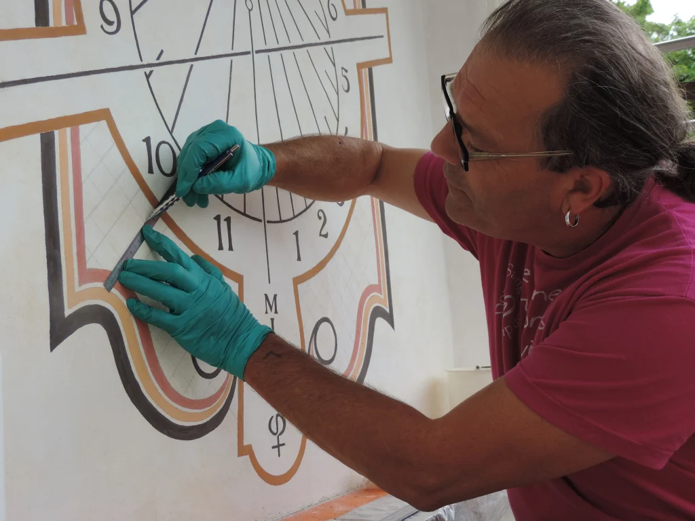
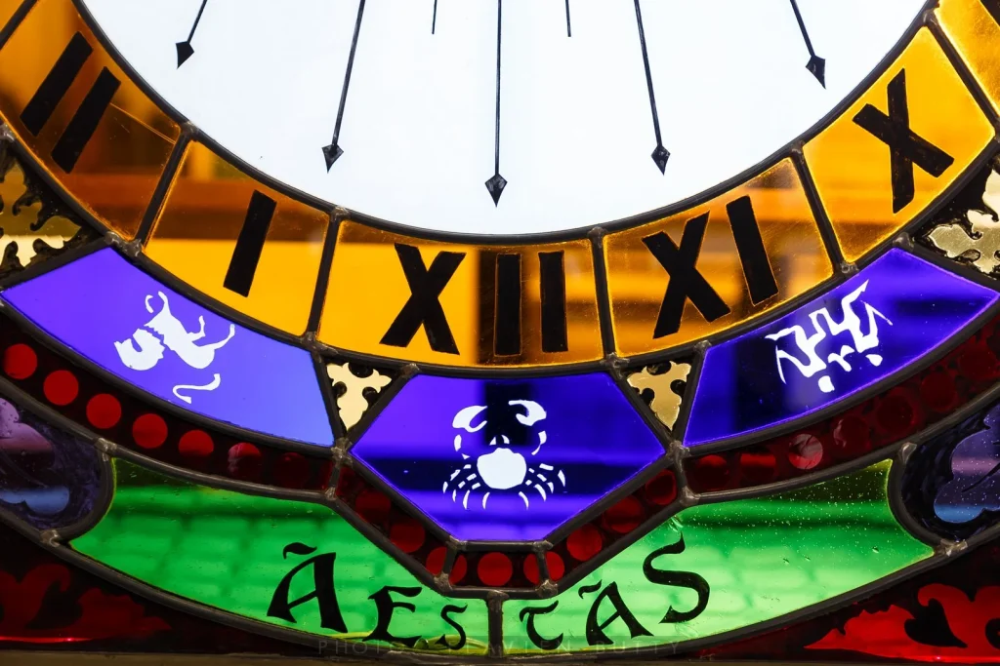

Graver le Temps
Sculpter la Lumière
L'art ancestral du vitrail et du cadran solaire, réinventé pour les architectures de demain. Découvrez une poésie intemporelle pour votre espace.
L'art ancestral du vitrail et du cadran solaire, réinventé pour les architectures de demain. Découvrez une poésie intemporelle pour votre espace.
Artisan cadranier et verrier d’art, l’Atelier Ombre-Jaille est spécialisé dans la création et la restauration.
Situé en Isère, au cœur du Dauphiné, l’atelier intervient sur tout le territoire, notamment sur des bâtiments anciens et des sites patrimoniaux.
Nous allions rigueur historique et esthétique contemporaine pour des lieux privés et publics.

Nos cadrans sont tracés selon les règles de la gnomonique et peints à fresque sur enduit à la chaux. Des instruments éducatifs conçus pour défier les siècles.
Explorer l'art du temps →
Verre soufflé et peinture à 630°C. Une alchimie entre plomb et lumière pour sublimer votre architecture.
Voir les projets →
« L’heureux propriétaire d’une horloge solaire détient un fragment d’éternité. »

Pour toute demande de renseignement, devis personnalisé ou prise de contact, l'atelier est à votre écoute pour donner vie à vos idées.